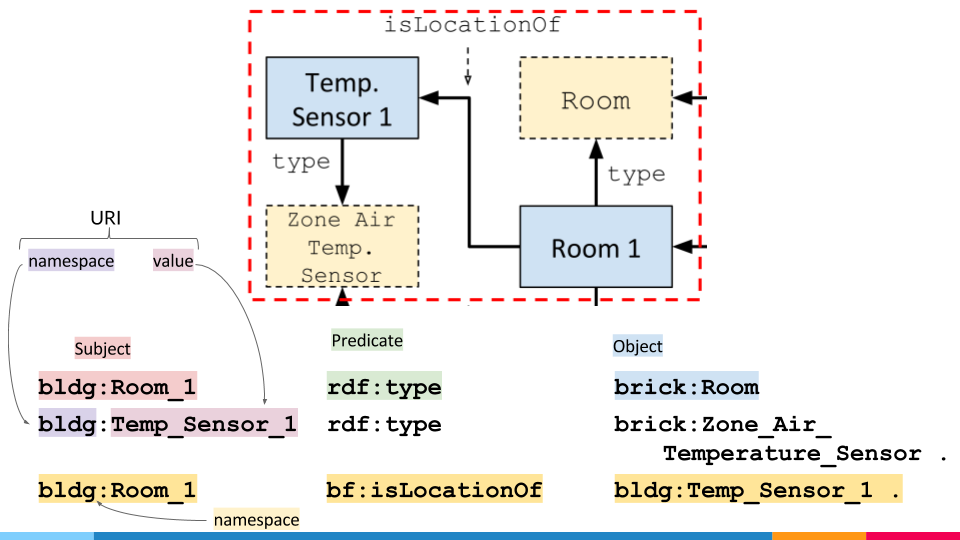
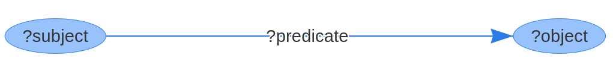
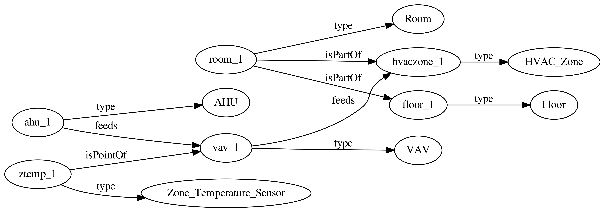
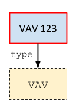
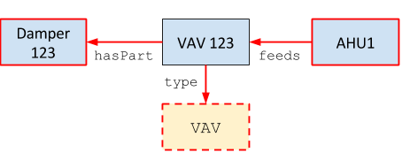
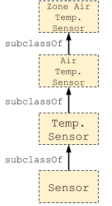
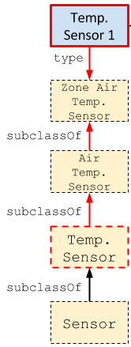

Query Language
RDF Primer

Brick models are graphs consisting of nodes and directed edges. These graphs are usually represented using the RDF data model, which represents a directed, labeled graph as a set of triples. A triple consists of a subject (node), a predicate (directed edge) and an object (node). Each triple represents 2 nodes (the subject and object) connected with a directed edge (the predicate). We will interact with the graph by way of these triples.

Triples are usually stored in a self-contained text file in the Turtle format (file ending .ttl).
The nodes in the Brick graph represent the sensors, actuators, equipment, subsystems, location and logical groupings in the building. Edges represent the relationships between these. There are only a few types of relationships that Brick captures. Here’s a brief recap of some common ones:
- Subcomponents:
bf:hasPart/bf:isPartOf. Used for mechanical composition, relating HVAC zones with physical spaces - Identifying flows:
bf:feeds/bf:isFedBy. Used for flows of water, electricity, air, etc. - Sensing + actuation:
bf:hasPoint/bf:isPointOf. Used for associating sensor, setpoints, statuses, commands, meters, etc with related equipment, locations, etc - Location:
bf:hasLocation/bf:isLocationOf. Identifies the physical location of something - Instantiation:
rdf:type
Recall that in the RDF data model, all nodes are either Literals (strings) or URIs. All URIs have a namespace: for example in the URI https://brickschema.org/schema/1.0.1/Brick#VAV, the namespace is https://brickschema.org/schema/1.0.1/Brick# and the “node” is VAV. For convenience, we will abbreviate the URI so we can write brick:VAV instead of https://brickschema.org/schema/1.0.1/Brick#VAV.
Here are the abbreviations we will use:
| Namespace | Usage | Abbreviation |
|---|---|---|
https://brickschema.org/schema/1.0.1/Brick# |
Brick classes | brick: |
https://brickschema.org/schema/1.0.1/BrickFrame# |
Brick relationships | bf: |
http://www.w3.org/1999/02/22-rdf-syntax-ns# |
class instantiation | rdf: |
http://www.w3.org/2000/01/rdf-schema# |
subclassing | rdfs: |
There’s a lot in those namespaces, but don’t worry! It will feel managable soon enough, and HodDB includes tools to make it easier to find the URIs you need.
Example Building
Our example building contains the following components:
- one floor (
floor_1) - one room on the floor (
room_1) - one HVAC zone, containing the one room (
hvaczone_1) - one zone temperature sensor in the room (
ztemp_1) - one VAV supplying the HVAC zone (
vav_1) - one AHU supplying the VAV (
ahu_1)
The Brick model of these relationships will be the triples representing the following graph

This graph would be defined by this set of triples:
mybuilding:ahu_1 rdf:type brick:AHU
mybuilding:room_1 rdf:type brick:Room
mybuilding:ztemp_1 rdf:type brick:Zone_Temperature_Sensor
mybuilding:floor_1 rdf:type brick:Floor
mybuilding:hvaczone_1 rdf:type brick:HVAC_Zone
mybuilding:vav_1 rdf:type brick:VAV
mybuilding:ahu_1 bf:feeds mybuilding:vav_1
mybuilding:room_1 bf:isPartOf mybuilding:floor_1
mybuilding:room_1 bf:isPartOf mybuilding:hvaczone_1
mybuilding:ztemp_1 bf:isPointOf mybuilding:vav_1
mybuilding:vav_1 bf:feeds mybuilding:hvaczone_1
Note that we are using a new namespace to “store” the names of the entities that are actually in our building.
SPARQL
SPARQL is a query language for RDF, but common Brick usage only uses a subset of its features.
One way of thinking about SPARQL is treating a query like pattern matching over the graph (i.e. finding graph isomorphisms). A SPARQL query consists of a WHERE clause containing the patterns of triples we want to match, and a SELECT clause identifying which parts of those triples we want to return.
Variables
SPARQL variables are indicated by a ? prefix (e.g. ?vav). Variables take the place of subjects, predicates and objects in the terms of our query.
Consider a Brick model that lists a bunch of VAVs
mybuilding:vav_1 rdf:type brick:VAV
mybuilding:vav_2 rdf:type brick:VAV
mybuilding:vav_3 rdf:type brick:VAV
mybuilding:vav_4 rdf:type brick:VAV
mybuilding:vav_5 rdf:type brick:VAV
Finding all VAVs in the building (e.g. mybuilding:vav_1) is equivalent to finding all nodes that have an rdf:type edge to the brick:VAV node.
Put another way, we want to find the subject of all triples in the Graph that have rdf:type as the predicate and brick:VAV as the object.
Expressed as a triple, this is:
?vav rdf:type brick:VAV
And the returned results would be mybuilding:vav_1, mybuilding:vav_2, etc.
Variables can be used more than once in a query, and a term can contain more than one variable.
Variables in the SELECT clause determine the “rows” that get returned as the result of a query.
Basic Query Construction
To start, let’s list all of the VAVs in the building. To do this, we want to find all nodes that have a rdf:type edge (which indicates instantiation) to the brick:VAV node which represents the Brick VAV class. In the corresponding triple, we will put rdf:type in the “predicate” slot and brick:VAV in the “object” slot. In the subject slot, we will place a variable that will be populated when the query executes:
|
|
This corresponds to finding instances of the following subgraph:

Listing Neighbors
A natural question when interacting with a new Brick model is what kind of information is associated with a particular VAV. We can express this as a SPARQL query by seeing which triples exist that have a VAV as the subject.
|
|
This corresponds to finding instances of the following subgraph:

Listing Types
The above queries work well if we know the exact classes instantiated in our Brick model. If we don’t have this information and want to discover it, we can leverage Brick’s class hierarchy.

A common use case is finding which kinds of temperature sensors exist in the Brick model. The basic form of this uses both the rdf:type relationship (instantiation) and the rdfs:subClassOf relationship. By default, mentioning a predicate only traverses a single edge in the graph. We use SPARQL’s * operator to match “0 or more” instances of an edge to transparently query more than one level of the hierarchy. SPARQL also provides a + operator to match “1 or more” edges.
This matches instances that are immediate subclasses of brick:Temperature_Sensor
|
|
This matches instances of brick:Temperature_Sensor as well as instances of any subclass of brick:Temperature_Sensor
|
|
This query corresponds to the following subgraph in the case of Zone Air Temperature Sensors

We can now run this query on our real Brick model to see what flavors of Temperature Sensor exist
If we are not interested in the intermediate class name, we can combine the expression of the rdf:type and rdfs:subClassOf* predicates using the / SPARQL operator:
One of the main benefits of Brick is its ability to represent multiple building subsystems and query across them. We will explore these capabilities of Brick through the implementation of two analytics applications: - Stuck Damper Detection - Simultaneous Heating and Cooling Detection
The point of these explorations is not to implement cutting-edge fault detection/diagnosis algorithms, but rather to illustrate how Brick can make it easier to find the relevant data streams and make an implementation portable across buildings.
Stuck Damper Detection
One method of detecting stuck dampers is to look at the difference between the supply air flow sensor and setpoint for a VAV.
- If the measured air flow is within some delta of the air flow setpoint, then the damper is fine
- Else, it might be broken
First, we write the Brick query(ies) to extract the relevant data streams: namely, the supply air flow sensor and supply air flow setpoint for each VAV in our building. In addition to the names of those points, we also extract from the Brick model some “timeseries identifier” that will point us to where we can obtain the actual data. Here, we use the brick:hasUuid relationship which points to an RDF literal corresponding to the name of a CSV data file.
Lets progressively build up the query. First, lets begin by identifying all the VAVs in the building:
|
|
We will then identify the supply air flow setpoints and sensors using the rdf:type relationship, and because they measure an aspect of a VAV, we know they will be related to a VAV using the isPointOf relationship.
|
|
Lastly, we pull out the UUIDs for the timeseries
|
|
Simultaneous Heating and Cooling Detection
Properly identifying simultaneous heating and cooling in a building involves traversing the HVAC and spatial hierarchies of the building. We must first find rooms that are contained within more than one HVAC zone and therefore are conditioned by more than one VAV.
From this, we have a few possible avenues. First, we can compare the reheat coil percentages for the VAVs feeding a single zone. Additionally, we can look at the cooling coil percentage for the AHU upstream of each VAV combined with the supply air flow as further evidence.
To begin, we need to find rooms that are in more than one HVAC zone. We follow the same procedure for building up the query: identify the instances of the relevant classes, and then filter these by the required relationships.
The instances we are interested in for this first queries are rooms and HVAC zones:
|
|
We then relate rooms and HVAC zones using the proper isPartOf relationship:
|
|
For each of the rooms in multiple HVAC zones, we get the reheat coil valve command for the VAVs feeding those zones. Following the rules of composition for the Brick model, we know there is:
- an
isPartOfrelationship from the room to the zone - a
feedsrelationship from the VAV to the zone - a
isPointOfrelationship from the reheat valve command to the VAV
We combine these into the following SPARQL triples:
|
|
The last triple gets us the UUID for the timeseries data representing the actual reheat valve command values.
We add to our query the Supply Air Flow sensors so we can tell how much hot/cold air is being blown into a room from the different VAVs
|
|
Querying Multiple Buildings
As of version 0.5.1, Hod supports loading and querying multiple graphs in parallel. The most helpful use for this is loading multiple buildings into a single HodDB database and querying across them..
Load in buildings and name them using the Buildings key of the hodconfig.yaml file (documentation link).
By default, all of the graphs in HodDB are queried. This can be changed (or made explicit) through the use of a FROM clause, which specifies the graphs to query by name in a space-delimited list.
For example, consider a databse in which we’ve loaded 2 graphs: bldg123 and bldgABC.
SELECT clause |
Graphs Queried |
|---|---|
SELECT * WHERE { ... } |
bldg123, bldgABC |
SELECT * FROM bldg123 WHERE { ... } |
bldg123 |
SELECT * FROM bldg123 bldgABC WHERE { ... } |
bldg123, bldgABC |
Data Integration
Brick models contain references to devices and other sources of data.
There are two pieces of information typically associated with each data source: the UUID (timeseries identifier) and a URI (for BOSSWAVE publish/subscribe).
UUIDs and URIs are stored as RDF Literals (strings) in the Brick graph, and are found using the https://brickschema.org/schema/1.0.1/BrickFrame#uuid/bf:uuid and https://brickschema.org/schema/1.0.1/BrickFrame#uri/bf:uri relationships.
For example, to find all thermostats we can subscribe to, use this query:
```sparql SELECT ?tstat ?uri WHERE { ?tstat rdf:type brick:Thermostat . ?tstat bf:uri ?uri };